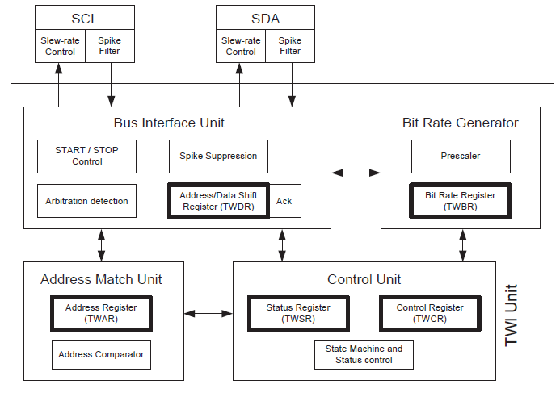
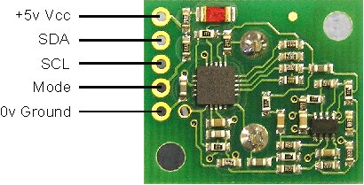

Komunikace RS232 a USB
Výstupy s procesoru jsou vždy v úrovni TTL, tzn. logická 0 je cca 0V a
logická 1 je 5V (3,3V). Pro připojení s PC je nutný napěťový převod na
specifikace RS232 nebo USB. Pro RS232 je vývojový kit vybaven obvodem
MAX232 a pro komunikaci přes USB obvodem FT232R.
Sběrnice I2C
Sběrnice I2C je v procesorech Atmel označována jako TWI (Two Wire
Interface) . Vlastní přenos využívá dvou vodičů a to SDA po kterém se
přenáší data a SCL pro přenos hodinového signálu. Komunikace probíhá
typem Master - Slave, kde každé zařízení má svoji adresu (vice zařízení
na lince). U některých obvodů je komunikace TWI řešena
softwarově, ale vlastni program je složitý a hlavně zabírá místo v
paměti. U procesoru ATmega 128 je komunikace řešena hardwarově jak
ukazuje následující blokové schéma.

Inicializace USART pro RS232
void uart_init (void)
{
// USART0 initialization
// Communication Parameters: 8 Data, 1 Stop, No Parity
// USART0 Receiver: On
// USART0 Transmitter: On
// USART0 Mode: Asynchronous
// USART0 Baud Rate: 9600
UCSR0A=0x00;
UCSR0B=0x18; //bez preruseni
//UCSR0B=0x98; // s prerusenim na prijem znaku (nutny vektor preruseni, globalne preruseni povolit a knihovna preruseni)
UCSR0C=0x06;
UBRR0H=0x00;
UBRR0L=0x5F;
}
Vektor přerušení pro příjem znaku
ISR(USART0_RX_vect)
{
}
Ovládání senzoru SRF02

Příkazové registry
| Command |
Action |
| Decimal |
Hex |
| 80 |
0x50 |
Real Ranging Mode - Result in inches |
| 81 |
0x51 |
Real Ranging Mode - Result in centimeters |
| 82 |
0x52 |
Real Ranging Mode - Result in micro-seconds |
| |
|
|
| 86 |
0x56 |
Fake Ranging Mode - Result in inches |
| 87 |
0x57 |
Fake Ranging Mode - Result in centimeters |
| 88 |
0x58 |
Fake Ranging Mode - Result in micro-seconds |
| |
|
|
| 92 |
0x5C |
Transmit an 8 cycle 40khz burst - no ranging
takes place |
| |
|
|
| 96 |
0x60 |
Force Autotune Restart - same as power-up.
You can ignore this command. |
| |
|
|
| 160 |
0xA0 |
1st in sequence to change I2C address |
| 165 |
0xA5 |
3rd in sequence to change I2C address |
| 170 |
0xAA |
2nd in sequence to change I2C address |
Datové registry
|
Location
|
Read
|
Write
|
|
0
|
Software Revision
|
Command Register
|
|
1
|
Unused (reads 0x80)
|
N/A
|
|
2
|
Range High Byte
|
N/A
|
|
3
|
Range Low Byte
|
N/A
|
|
4 |
Autotune Minimum - High Byte |
N/A |
|
5 |
Autotune Minimum - Low Byte |
N/A |
Funkce pro I2C (knihovna twi_lib.h)
i2c_init() - Inicializace I2C
i2c_start_wait() - komunikace pro konkrétní adresu I2C zařízení
i2c_write(); - zápis na adresu
i2c_rep_start() - oslovení zařízení pro čtení
i2c_readNak() - načtení znaku
i2c_stop() - ukončení komunikace I2C
Řešení
Příklad 1
#define F_CPU 16000000UL
#include <avr/io.h>
#include <string.h>
#include <util/delay.h>
#include <avr/interrupt.h>
volatile unsigned char prerus=0;
volatile unsigned char muj_b;
char tempstr[12],znak;
//*******************************************************************************************
// MOJE UPRAVY
//-------------------------------------------------------------------------------------------
//
#define setb(port,pin) port |= 1<<pin //nastav bit
#define clrb(port,pin) port &= ~(1<<pin) //nuluj bit
#define negb(port,pin) port ^= 1<<pin //neguj bit
//*******************************************************************************************
//UART ATmega 128
//*******************************************************************************************
// Funkce pro UART:
void init_uart (unsigned int baud); //inicializace UART
unsigned char u_getc( void
);
//přijmi znak z UART
void u_putc( char data
);
//napiš znak do UART
void u_puts( char *text
);
//napiš string do UART
// UART pošli znak:
void u_putc( char data )
{
while ( !( UCSR0A & (1<<UDRE)) ) // Wait for empty transmit buffer
;
UDR0 =
data;
// Put data into buffer, sends the data
}
// UART pošli string:
void u_puts( char *text )
{
unsigned char i=0,temp;
do
{
temp = text[i];
if(temp==0) break;
u_putc(temp);
i++;
}
while(temp>0);
}
// UART přijmi znak:
unsigned char u_getc( void )
{
while ( !(UCSR0A & (1<<RXC)) ) // Wait for data to be received
;
return
UDR0;
// Get and return received data from buffer
}
// u_puts(tempstr);
// u_puts("\r\n"); // odřádkuj
// Inicializace na 9600 pro 16MHZ
/*
UCSR0A=0x00;
UCSR0B=0x18;
UCSR0C=0x06;
UBRR0H=0x00;
UBRR0L=0x67;
char tempstr[12],znak;
*/
//******************************************************************************************
ISR(USART0_RX_vect)
{
prerus=1;
muj_b = UDR0;
}
void main(void)
{
// Inicializace UART na 9600 pro 16MHZ
UCSR0A=0x00;
//UCSR0B=0x18; bez preruseni
UCSR0B=0x98;
UCSR0C=0x06;
UBRR0H=0x00;
UBRR0L=0x67;
PORTB=0; // zablikani na zacatku
_delay_ms(50);
PORTB=255;
_delay_ms(50);
PORTB=0;
_delay_ms(50);
PORTB=255;
_delay_ms(50);
sei();
while (1)
{
if (prerus==1)
{
u_puts("Obdrzel jsem:");
u_putc(muj_b);
u_puts("\r\n");
// odřádkuj
}
};
}
Příklad 2
Do příkladu 1 přidáme načtení vzdálenosti :
#define U1 0xE0 // ADRESA
i2c_init();
i2c_start_wait(U1+I2C_WRITE); // (adresa+bit pro
zapis)
i2c_write(0x00); // zapis na tuto adresu
...
i2c_write(81);
// tohle (81 start mereni v cm)
_delay_ms(70); // cekani na konec mereni min 63ms
/// precti
vzdalenost 1. (byte 2 a 3)
i2c_start_wait(U1+I2C_WRITE);
i2c_write(3);
//1.
vydalenost L
i2c_rep_start(U1+I2C_READ); // (adresa+bit pro cteni)
vzdalenostL=i2c_readNak()
; // precteni
jednoho B a ulozeni do promenne
i2c_write(2);
//1.
vydalenost H
i2c_rep_start(U1+I2C_READ);
vzdalenostH=i2c_readNak() ;
i2c_stop();
vzdalenost=(vzdalenostH*256)+vzdalenostL ;